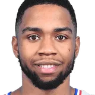
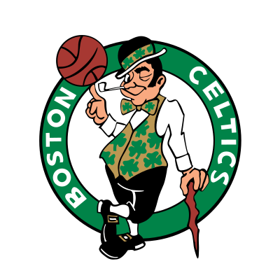

Played 1 season for 1 team; his teams went 5–13 in his games.
Final NBA finish, season by season
Title Finals Other playoffs Missed. #1 = champion; the dashed line is last place that season. Each point opens that season's final standings.
All 30 teams ranked in 2016-17, his best finish (#27)Teammate help
 Dario Saric0.21 season
Dario Saric0.21 season
Career
Regular seasons 1946-47 to 2026-27, games through Nov. 17, 2026. Records include 2026-27 to date; season counts and finishes use completed seasons. Each card opens its board. How we count.
Latest completed seasons
- 2016-17
 Philadelphia 76ers: #27 of 30, 28–54 · Missed
Philadelphia 76ers: #27 of 30, 28–54 · Missed
Season by season
Newest first; every header sorts. Final NBA finish is the team's rank among all teams that season (#1 = champion) and opens that season's standings. "Without him" uses the team-season window; the span line counts only the games between his first and last game for the team.
| 2016-17 | #27 of 30 | 28–54 34.1% | Missed | 18 of 82 | 5–13 27.8% | 23–41 35.9%span: 0–2, gap +27.8 | −8.2 |
On/off, starts and close games
From the lineup data, 1996-97 on. On/off is net points per 100 possessions with him on the floor minus off, a different unit from the win-rate gaps. Started and off the bench are team records in those games; close games are those within 5 points in the last 5 minutes with him on the floor.
| 2016-17 | +10.1 | N/A | 5–13 27.8% | 0–2 0.0% |
Teammate help by season
Help = Teammates Score points for honors won that season by teammates who shared a game with him. How help works.
- 2016-17Philadelphia 76ers
Dario Saric All-Rookie 1st17 g
Entering help and the other teammates
Entering the season: 0.2 · from Jahlil Okafor (0.2)
No honors that season: TJ McConnell 18 g, Nik Stauskas 18 g, Timothe Luwawu 18 g, Richaun Holmes 18 g, Justin Anderson 17 g, Gerald Henderson 16 g, Robert Covington 10 g, Sergio Rodriguez 10 g, Tiago Splitter 7 g, Jahlil Okafor 6 g, Alex Poythress 5 g, Justin Harper 1 g
Compare with a peer
Suggested peers need 300+ career games. Pick anyone below.
Record against each opponent
Regular season, completed seasons: 18 games, 5–13, against 15 franchises. Grouped by franchise (named as today); game lists keep each team's name that season.
| Games list | |||||||
|---|---|---|---|---|---|---|---|
| 2 | 1–1 | 50.0% | 0 | N/A | 2016-17 | ||
| 2 | 1–1 | 50.0% | 0 | N/A | 2016-17 | ||
| 2 | 0–2 | 0.0% | −2 | N/A | 2016-17 | ||
| 1 | 0–1 | 0.0% | −1 | N/A | 2016-17 | ||
 Boston CelticsMost-faced: Gerald Green (1 games) · Head-to-Head | 1 | 1–0 | 100.0% | +1 | N/A | 2016-17 | |
| 1 | 0–1 | 0.0% | −1 | N/A | 2016-17 | ||
| 1 | 1–0 | 100.0% | +1 | N/A | 2016-17 | ||
| 1 | 0–1 | 0.0% | −1 | N/A | 2016-17 | ||
| 1 | 1–0 | 100.0% | +1 | N/A | 2016-17 | ||
| 1 | 0–1 | 0.0% | −1 | N/A | 2016-17 | ||
| 1 | 0–1 | 0.0% | −1 | N/A | 2016-17 | ||
| 1 | 0–1 | 0.0% | −1 | N/A | 2016-17 | ||
| 1 | 0–1 | 0.0% | −1 | N/A | 2016-17 | ||
| 1 | 0–1 | 0.0% | −1 | N/A | 2016-17 | ||
| 1 | 0–1 | 0.0% | −1 | N/A | 2016-17 |
Rows add up to his career record in his games. A playoff series counts when he played in it; early round-robin games show as games only. How we count.
Arrival and departure
Team wins per 82 games the season before he arrived vs his first season there, and his last season vs the season after he left. Per 82 so short seasons compare fairly. These are team records, not a measure of what he did.
| Left | 2017-18 | 2016-17: 28–54 28.0 per 82 | 2017-18: 52–30 52.0 per 82 | +24.0 wins | |
| Arrived | 2016-17 | 2015-16: 10–72 10.0 per 82 | 2016-17: 28–54 28.0 per 82 | +18.0 wins |